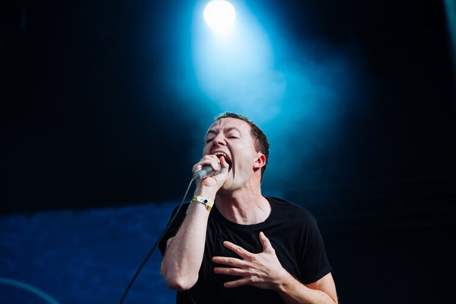

Post-Hardcore
Jeremy Bolm, lead of Touche Amore by Henry W. Laurisch at https://en.wikipedia.org/wiki/Touch%C3%A9_Amor%C3%A9#/media/File:Highfield_-_Touche_Amore.jpg, CC BY.
Post-hardcore is a subgenre of punk and hardcore punk that emerged in the 1980s as a response to the increasingly commercialized and mainstream nature of punk rock. It is characterized by its aggressive, high-energy sound and its fusion of punk rock with other genres such as alternative rock, emo, and metal. The roots of post-hardcore can be traced back to the Washington, D.C. hardcore punk scene of the early 1980s, which was home to bands like Minor Threat and Bad Brains. These bands rejected the commercialization of punk and focused on creating an authentic, DIY punk sound that emphasized fast tempos and aggressive vocals. In the mid-1980s, bands like Hüsker Dü and Black Flag began to experiment with more melodic and dynamic song structures, paving the way for the melodic and experimental elements that would become hallmarks of post-hardcore. The term "post-hardcore" was first used to describe bands like Fugazi, who emerged out of the D.C. punk scene in the late 1980s. Fugazi's music combined the aggression and energy of hardcore punk with more melodic and experimental elements, such as intricate guitar work and unconventional song structures. Throughout the 1990s, post-hardcore continued to evolve and diversify, with bands like At the Drive-In, Drive Like Jehu, and Refused incorporating elements of emo, math rock, and avant-garde music into their sound. In the 2000s, post-hardcore experienced a resurgence in popularity, with bands like Thursday, Thrice, and The Used incorporating elements of emo, screamo, and pop punk into their sound. These bands, along with others like My Chemical Romance and Fall Out Boy, helped to popularize a more melodic and accessible version of post-hardcore that came to be known as "emo-pop" or "pop-punk." Today, post-hardcore continues to evolve and push the boundaries of punk and hardcore punk, with bands like Touché Amoré, La Dispute, and Pianos Become the Teeth incorporating elements of post-rock, ambient music, and spoken word poetry into their sound.